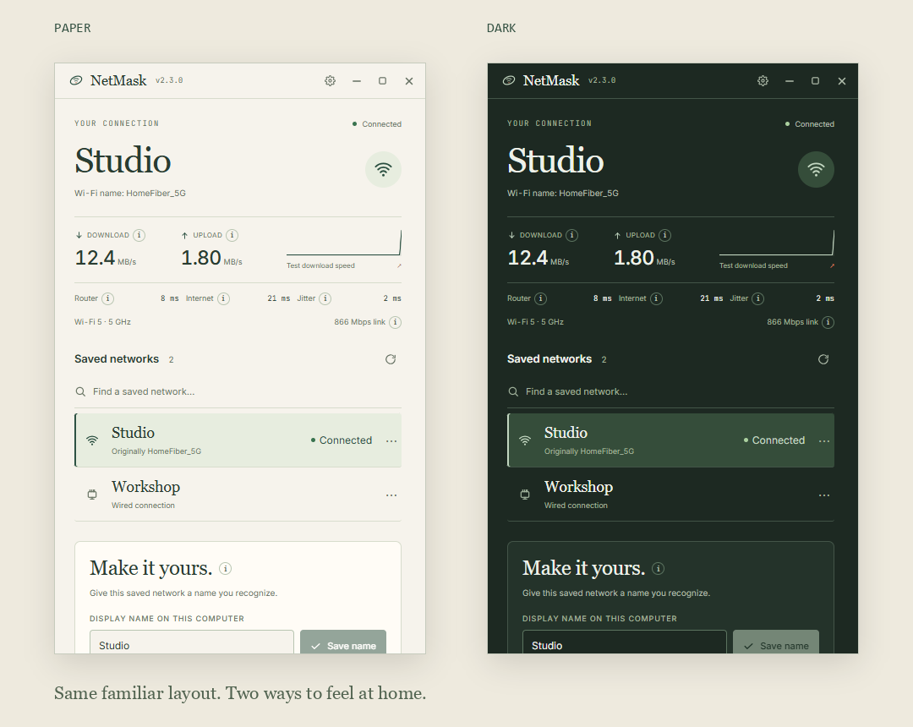
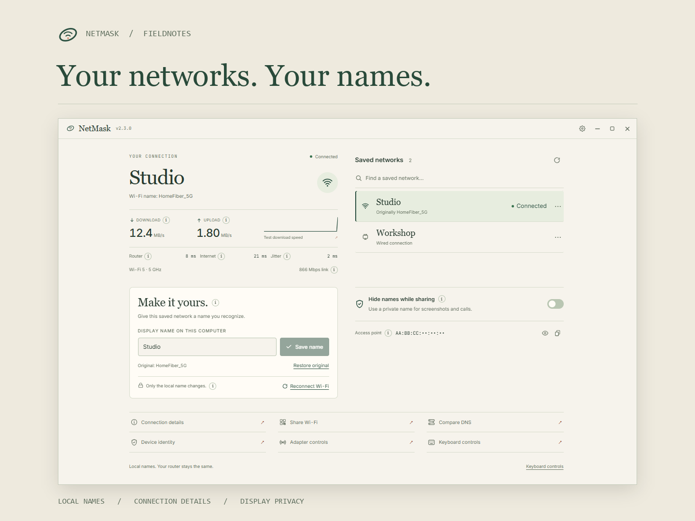

1 · Showcase
A centered introduction, a large screenshot, and benefits before downloads.
A close preview of GitHub's rendering. GitHub controls its final fonts and spacing. Sample networks and measurements are fictional.

Four complete layouts. Actual app screenshots. GitHub-compatible Markdown.
A centered introduction, a large screenshot, and benefits before downloads.
A close preview of GitHub's rendering. GitHub controls its final fonts and spacing. Sample networks and measurements are fictional.
Your networks. Your names.
Give a saved network a name you recognise, see how your connection is doing,
and keep personal names out of screenshots. A small desktop app for Windows, macOS, and Linux.

Fieldnotes in Paper and Dark. Screenshots show fictional networks and sample measurements.
HomeFiber_5G into Studio on your computer. The original is saved so you can restore it.Only local labels change; your router keeps its Wi-Fi name. Display privacy changes what is shown and does not make your connection anonymous.
Latest: v2.3.0 · Release notes
| Windows 10 / 11 | macOS 12+ | Linux |
|---|---|---|
| x64 Download installer · MSI |
Apple silicon Intel |
x64 · NetworkManager Debian / Ubuntu · AppImage |
Run the Windows installer, drag the Mac app into Applications, or install the Linux package. For AppImage, make the file executable first.
Checksums · Installation and privacy notes · All releases
Paper and Dark themes, custom controls, and explanations where you need them. Shrink the window to 320 × 200 and scroll through the app and its dialogs.
Windows edits Network List labels, macOS edits network service labels, and Linux edits NetworkManager connection names. Available tools depend on your OS and adapter; unsupported controls explain their limits. Some Wi-Fi details and saved credentials require system permission. QR codes contain readable Wi-Fi credentials.
Built with Tauri 2, Rust, React, and TypeScript. Install Node.js 22.12+, Rust 1.90+, and the Tauri prerequisites, then:
npm ci
npm run dev
Contributing · Architecture · Audit · Release guide
Created and maintained by Bello Bilal · @billighost · bb2010ng@gmail.com · MIT
HomeFiber_5G can be Studio. An old wired profile can be Workshop. NetMask gives saved networks local names that make sense to you, keeps the originals, and puts connection details within reach.

Fieldnotes: warm paper, green ink, and room to breathe. Sample networks and measurements.
Your router keeps broadcasting the same Wi-Fi name. Windows may still show that name in its Wi-Fi menu; NetMask edits the local profile label.
See what's happening. Read transfer activity, response time, and available Wi-Fi details. The little i buttons explain technical terms in simple words.
Share your screen comfortably. Apply a private display name and hide the access point address inside NetMask. Display privacy changes what is shown; it does not make your connection anonymous.
Stay close to your tools. Reconnect saved Wi-Fi, compare DNS lookup times, test a small download, or create a QR code for supported personal Wi-Fi. A QR code includes readable credentials, so share it with someone you want to give access.
v2.3.0 · What's new
Verify your download · Installation notes · Other releases
Paper and Dark themes. Custom menus and switches. Internally scrolling panels and dialogs, even at 320 × 200. Settings keeps General, Privacy, Tools, and About easy to find.
Names and preferences stay in your account's data directory. Tools vary by OS and adapter, and unavailable controls explain why. Windows changes profile labels, macOS changes service labels, and Linux changes NetworkManager names.
The app uses Tauri 2, Rust, React, and TypeScript. Install Node.js 22.12+, Rust 1.90+, and the Tauri prerequisites.
npm ci
npm run dev
Read Contributing, Architecture, the audit, or the release guide.
Made by Bello Bilal · @billighost · bb2010ng@gmail.com · MIT license
Local network names. Clear connection details. Windows, macOS, and Linux.
Rename saved networks on your computer, keep their original names, and use a private display name when sharing your screen.
| Your computer | Get the app | Install |
|---|---|---|
| Windows 10 / 11 · x64 | Installer · MSI | Run the installer. |
| Mac · Apple silicon · macOS 12+ | DMG | Drag NetMask into Applications. |
| Mac · Intel · macOS 12+ | DMG | Drag NetMask into Applications. |
| Linux · x64 · NetworkManager | DEB · AppImage | Install the DEB, or make the AppImage executable. |
Release notes · Checksums · Installation notes · All releases
The actual Fieldnotes interface, using fictional networks and sample measurements.
You can also reconnect saved Wi-Fi, run a small download test, or share supported personal Wi-Fi with a QR image. QR codes contain readable credentials.
Tauri 2 + Rust + React + TypeScript. Install Node.js 22.12+, Rust 1.90+, and the Tauri prerequisites.
npm ci
npm run dev
Contributing · Architecture · Audit · Release guide
Created and maintained by Bello Bilal · @billighost · bb2010ng@gmail.com · MIT

A small desktop app for giving saved networks names you recognise. Original names stay recoverable, connection details stay close, and your screen stays easy to read.
HomeFiber_5G → Studio. Choose a network, write a name, and select Save name. Choose Restore original whenever you want it back.
| Make it familiar | See what's happening |
|---|---|
| Rename a local label and keep its original. Apply a private display name when sharing your screen. | Read transfer activity, response times, and available Wi-Fi details. Tap a small i to understand a value. |
| Keep tools nearby | Use the space you have |
| Reconnect Wi-Fi, compare DNS, test a small download, or share supported Wi-Fi with a QR image. | Paper and Dark, custom controls, and scrolling panels and dialogs — down to 320 × 200. |
Only the local label changes; your router keeps broadcasting its Wi-Fi name. Display privacy does not make the connection anonymous. QR codes include readable credentials.
v2.3.0 · What's new
Windows 10 / 11 · x64
Download installer · MSI package
macOS 12+
Apple silicon DMG · Intel DMG
Linux · x64 · NetworkManager
Debian / Ubuntu · AppImage
Run the Windows installer. On Mac, drag NetMask into Applications. On Linux, install the DEB or make the AppImage executable and open it.
Checksums · Installation notes · All releases
Windows edits Network List labels, macOS edits service labels, and Linux edits NetworkManager connection names. Tools depend on the OS, adapter, and system permissions; unavailable controls explain their limits. Windows may continue showing the router's original SSID in its Wi-Fi menu. Original labels and preferences stay in your account's data directory.
Tauri 2, Rust, React, and TypeScript. Install Node.js 22.12+, Rust 1.90+, and the Tauri prerequisites, then:
npm ci
npm run dev
By Bello Bilal · @billighost · bb2010ng@gmail.com · MIT license